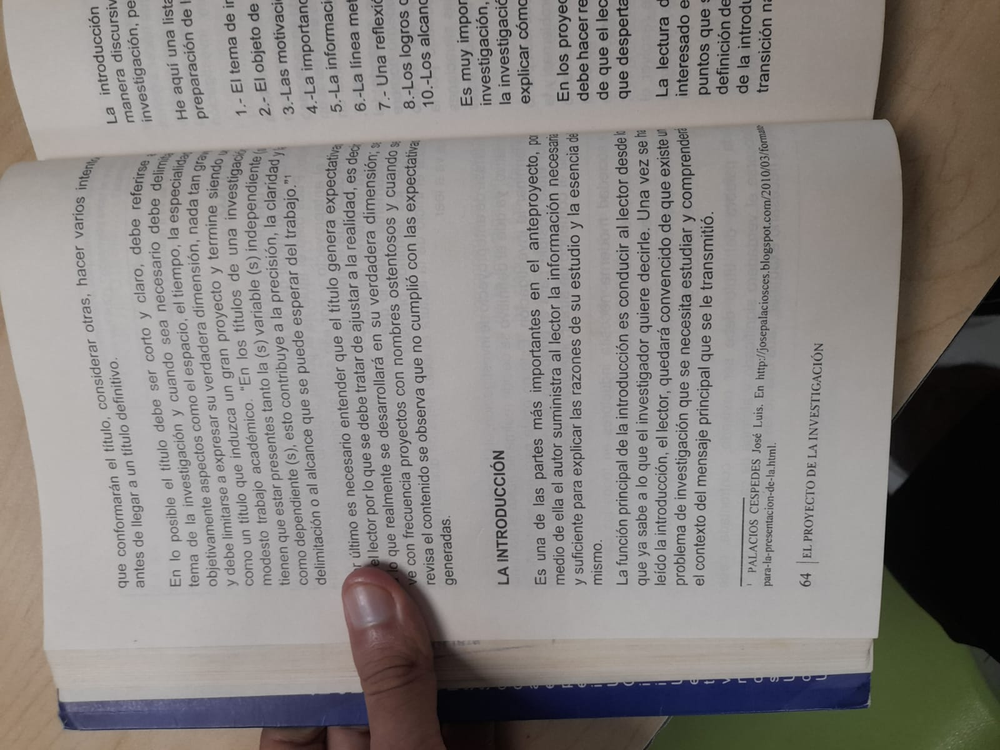
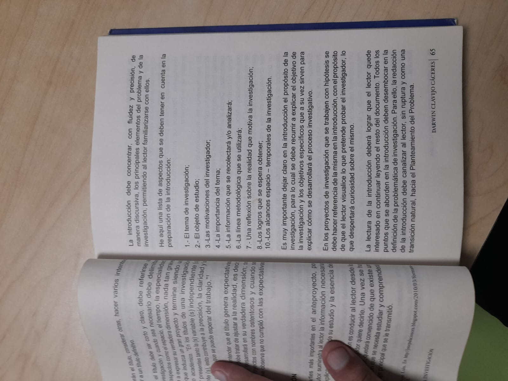

Escritura de introducción de trabajos investigativos
Juan Sebastian Perez Galvis
En El proyecto de la investigación, haciendo posible la tesis de grado, Darwin Clavijo Cáceres dedica las páginas 64 y 65 de su libro a la introducción y comienza con una definición contundente: la introducción "es una de las partes más importantes en el anteproyecto, por medio de ella el autor suministra al lector la información necesaria y suficiente para explicar las razones de su estudio y la esencia del mismo" (Clavijo Cáceres, 2010, p. 64). La introducción no es entonces un resumen ni un saludo inicial; es la pieza que le da al lector las razones del estudio.
La función principal de la introducción, según el mismo autor, "es conducir al lector desde el conocimiento que ya sabe a lo que el investigador quiere decirle" (p. 64). Al terminar de leerla, el lector debe quedar convencido de que existe un problema de investigación que necesita estudiarse y debe comprender el contexto del mensaje principal. Por eso Clavijo Cáceres exige que la introducción concentre, "con fluidez y precisión, de manera discursiva, los principales elementos del problema y de la investigación" (p. 65), y que su lectura deje al lector "interesado a continuar leyendo el resto del documento" (p. 65). Es un texto continuo y bien hilado, no una lista de frases sueltas.
En la página 64 el libro advierte que, antes de llegar a un título definitivo, deben considerarse varios intentos. En lo posible el título debe ser corto y claro, debe referirse al tema de la investigación y, cuando sea necesario, debe delimitarse con el espacio, el tiempo, la especialidad y la objetividad del estudio. La delimitación del título es lo mismo que la delimitación del trabajo: ambos le dicen al lector qué desarrollo y qué alcance puede esperar de lo que viene. Por eso, el título y la introducción se preparan juntos, porque ambos deben apuntar al mismo asunto.
El autor ofrece una lista abierta de aspectos que se deben tener en cuenta en la preparación de la introducción (p. 65). Cada uno aporta un elemento distinto, y todos juntos completan la imagen del proyecto:
La lista aparece en el texto numerada del uno al ocho y, luego, en un punto ten, sin que el punto nueve figure en la página consultada.
El propósito de la investigación debe quedar claro en la introducción, y para lograrlo el autor recomienda recurrir al objetivo y al objeto de estudio; los objetivos específicos, a su vez, explican cómo se desarrollará el proceso investigativo. En los proyectos que trabajan con hipótesis, la introducción debe hacer referencia a ella, de modo que el lector visualice lo que el investigador pretende probar, y eso despierta curiosidad sobre el planteamiento.
Hay una regla de cierre: todos los puntos abordados en la introducción "deben desembocar en la definición del problema de investigación" (p. 65). Para lograrlo, la relación entre la titulación, el planteamiento de la problemática y la definición del problema debe conducir al lector, sin ruptura y como una transición natural, hacia el Planteamiento del Problema. La introducción bien hecha termina donde el problema empieza. Las citas que el autor usa provienen de Palacios Cervedes, citado a pie de página del propio libro (Clavijo Cáceres, 2010, p. 64).
Desde 2023 los modelos de lenguaje de gran tamaño con pesos abiertos, y con variantes que caben en un escritorio, empezaron a competir con los servicios en la nube en tareas de programación. El tema de esta investigación es la velocidad con la que estos modelos, ejecutados en un computador de uso personal, cierran la brecha frente a los mejores modelos cerrados, y el tamaño de esa brecha entre 2023 y 2026. El objeto de estudio es el desempeño medido de los modelos viables en una máquina de consumo, con pesos cuantizados en formato Q4_K_M, caché de contexto residente y velocidades de al menos 15 a 20 tokens por segundo en equipos con 16 GB de memoria de video como escenario principal, 24 GB como cota y 8 GB como escenario de sensibilidad. Se estudia con los benchmarks de generación de código HumanEval y HumanEval+, MBPP y MBPP+, LiveCodeBench y BigCodeBench, y con SWE-bench Verified y SWE-bench Pro en tareas de ingeniería de software.
La motivación nace de una contradicción cotidiana. Cualquiera puede descargar hoy un modelo abierto y ejecutarlo en su escritorio, sin costo por consulta y sin enviar sus datos a la nube; pero los anuncios hablan de récords en tablas de posición y casi nunca de la máquina necesaria para alcanzarlos, y las publicaciones evalúan los modelos más grandes, con recursos de centros de datos. Frecuentemente se compra un equipo para la última novedad y se descubre que no puede con ella. La pregunta importa a quien decide qué hardware comprar, a las organizaciones que no pueden entregar su código a un servicio externo y a los estudiantes sin presupuesto para suscripciones: no existe una medición confiable, y pública, de qué tan rápido mejora lo que realmente se puede ejecutar en casa.
El estudio se desarrolla como revisión sistemática, según las directrices PRISMA 2020 y el checklist PRISMA-S, con cadenas de búsqueda preespecificadas y documentadas en Scopus, Web of Science y arXiv, y adaptaciones listas para IEEE Xplore, ACM Digital Library y ACL Anthology. Los criterios de inclusión son tres: reportar un benchmark del conjunto predefinido, evaluar una familia con viabilidad local y ubicarse entre 2023 y 2026; los 118 candidatos resultantes de la búsqueda de 2392 registros y el cribado de 1239 requieren revisión humana y una evaluación de riesgo de sesgo de cinco ítems antes de la síntesis cuantitativa, una meta-regresión de efectos mixtos con la fecha de publicación como predictor principal. El análisis se alimenta de las ternas de modelo, benchmark y puntaje de los estudios, junto con la fecha de publicación y la procedencia de cada cifra, y de las tablas de posición públicas de Epoch AI, SWE-bench Verified, LiveBench y EvalPlus como verificación complementaria.
El contexto revela dos asimetrías que motivan el trabajo: las tablas de posición mezclan modelos gigantes que exigen centros de datos con modelos cuantizados que caben en un portátil, sin ninguna columna de viabilidad, y la evidencia sobre los modelos locales se concentra en benchmarks cercanos a la saturación, mientras que en ingeniería de software casi nunca aparecen evaluados. De aquí se esperan tres logros: estimar la tasa de mejora según la fecha de publicación, cuantificar y descomponer la brecha frente a la frontera propietaria en diferencia abierto-cerrado y costo de viabilidad, y dejar un corpus auditable con registro de cribado por registro. El estudio cubre literatura en inglés publicada entre 2023 y 2026, con las evaluaciones de SWE-bench restringidas a 2024 y 2026 y corte de búsqueda en agosto de 2026; quedan fuera los modelos cerrados como objeto de evaluación, los que solo corren en centros de datos y la reejecución propia de los benchmarks.
El objetivo general del trabajo es cuantificar la evolución del desempeño en tareas de programación de estos modelos y medir la brecha que los separa de la frontera propietaria; de él se desprenden cuatro objetivos específicos, que van de la caracterización del corpus a la estimación de la tasa de mejora, la descomposición de la brecha y los análisis de sensibilidad. La revisión no parte de una hipótesis estadística, sino de dos preguntas, y la introducción las hace explícitas en el lugar que se reserva a las hipótesis: ¿Con qué rapidez, entre 2023 y 2026, reducen la brecha de desempeño en tareas de programación los modelos de lenguaje de gran tamaño ejecutables localmente frente a los modelos cerrados de la frontera propietaria? y ¿qué tan grande es esa brecha restante en cada benchmark y fecha? Todos estos elementos desembocan en el problema de investigación: la velocidad con la que los modelos que caben en un computador personal reducen su diferencia con la frontera propietaria no ha sido medida con un protocolo sistemático y reproducible, y sin esa medida no existe una base confiable para decidir sobre su uso en máquinas de consumo. Ese problema se desarrolla en la sección siguiente del anteproyecto, a la que esta introducción conduce como transición natural.
Clavijo Cáceres, D. (2010). El proyecto de la investigación, haciendo posible la tesis de grado (pp. 64-65). Universidad Libre, Seccional Cúcuta.
Palacios Cervedes, J. L. (2010). Formato pasos presentación de la. Recuperado de http://jeapaliacus.noes.bitcloud.com/2010/05/format-paus-presentacion-de-la.html (citado en Clavijo Cáceres, 2010, p. 64).
Page, M. J., McKenzie, J. E., Bossuyt, P. M., Boutron, I., Hoffmann, T. C., Mulrow, C. D., & Moher, D. (2021). The PRISMA 2020 statement: An updated guideline for reporting systematic reviews. BMJ, 372, n71. https://doi.org/10.1136/bmj.n71
Figura 1. Página 64 de El proyecto de la investigación, haciendo posible la tesis de grado de Darwin Clavijo Cáceres, en la que se presenta la definición y la función de la introducción, así como las consideraciones sobre el título.

Nota. Tomada de Clavijo Cáceres (2010, p. 64).
Figura 2. Página 65 del mismo texto, con la lista de diez aspectos que debe concentrar la introducción, el propósito de la investigación y la transición hacia el planteamiento del problema.

Nota. Tomada de Clavijo Cáceres (2010, p. 65).